Todo lo hecho está publicado en innovasocial.co y verificado en vivo: 95 de 95 comprobaciones del formulario y 70 de 70 de permisos contra la base real. Falta lo que depende de datos tuyos: los 4 PDFs (hoy dan 404), el enlace al Plan Nacional de Negocios Verdes, la casilla de política de datos y la galería.
Publicado el 16 de noviembre de 2026 (commit b164bfb).
| Tarea | Estado | Detalle |
|---|---|---|
Formulario cerrado y luego habilitado (interruptor POSTULACIONES_ABIERTAS) | En producción | Abierto en innovasocial.co, www y convocatoria. |
| Dominio innovasocial.co y www apuntando a Vercel | En producción | Vercel: sin errores de configuración; el raíz redirige a www con HTTPS. |
Supabase: URL permitidas de acceso.html, registro público cerrado y site_url en https://www.innovasocial.co | En producción | Verificado leyendo la configuración de Auth. |
| Pruebas de seguridad y funcionamiento del formulario | En producción | 70/70 permisos en producción; formulario 46/46. |
| Una postulación por cédula | En producción | Índice aplicado el 16 nov; el mensaje ya está publicado. |
| Bloque 1: secciones reorganizadas y «¿Estás vendiendo?» condicional | En producción | Probado; espera tu aprobación para pasar a main. |
| Etiqueta «Describe el impacto social y ambiental que genera tu emprendimiento» | En producción | Viaja con el Bloque 1. |
| Enlaces de términos, política, preguntas frecuentes y resumen PNNV | Bloqueado | Dan 404: los PDFs no están en el repo ni en Supabase. Hacen falta los archivos. |
| Beneficio de $10M a $12M | En producción | Inicio: cifra destacada y texto «hasta $12.000.000 en especie» (captura 20). |
| Nota que diferencia ventas (facturado) y ganancia | En producción | Una nota en cada campo, con un ejemplo en la ganancia (captura 17). |
| Redes sociales obligatorias (quitar «opcional») | En producción | Se exige al menos una, con aviso y validación del formato (captura 18). |
| Video de máximo 3 minutos con la guía de contenido | En producción | Formulario, inicio y convocatoria dicen 3 minutos (captura 19). |
| Nube explicativa de la tipología de negocios | En producción | Botón «¿Cuál es la diferencia?»; abre con clic y cierra con Escape o al pulsar fuera (captura 16). |
| Texto con enlace al Plan Nacional de Negocios Verdes | Pendiente | Bloque 2; falta confirmar dónde va. |
| Texto de aceptación de la política de datos | Pendiente | La casilla existe; falta confirmar el texto. |
| Quitar el enlace «Ruta del programa» y llevar a etapas | En producción | Ahora abre convocatoria.html#etapas (captura 21). ruta.html queda sin enlaces. |
| Galería en «Esto no es una promesa. Ya pasó.» | Pendiente | Bloque 3; faltan las fotos. |
| Documentos soporte de ventas (si vende) | En producción | Hasta 4 archivos; el primero es obligatorio si vende (capturas 22 y 23). |
| Fotos de productos con enlace de Drive | En producción | Obligatorio, con la nota para habilitar el acceso (captura 24). Se ve en la ficha y en el CSV (captura 25). |
El backend simulado no imitaba la regla de una postulación por cédula, así que el mensaje «Ya existe una postulación con ese número de documento» no tenía prueba. Ahora el simulador responde como la base real (código 23505) y la prueba lo confirma (captura 10).
Los campos quedaban marcados como obligatorios en el HTML aunque se ocultaran al responder «No». Ahora se activan y desactivan con la respuesta, igual que el tipo de discapacidad.
Las pruebas vivían en una carpeta temporal que ya se borró una vez. Quedaron en el repo como pruebas/formulario.js, con las capturas en esta carpeta.
www.innovasocial.co/files_web/…pdf. Lo más probable es que esos archivos vivieran en el sitio viejo de Hostinger, y que al apuntar el dominio a Vercel dejaran de responder. No están en el repo ni en Supabase. Hacen falta los 4 archivos para publicarlos.documentos acepta cualquier ruta; si alguien repite cédula, sus 3 archivos quedan subidos sin postulación; y en celular «Redes sociales» queda algo pegado al campo anterior (ya venía así).Tomadas por pruebas/formulario.js sobre la versión de la rama con el backend simulado.
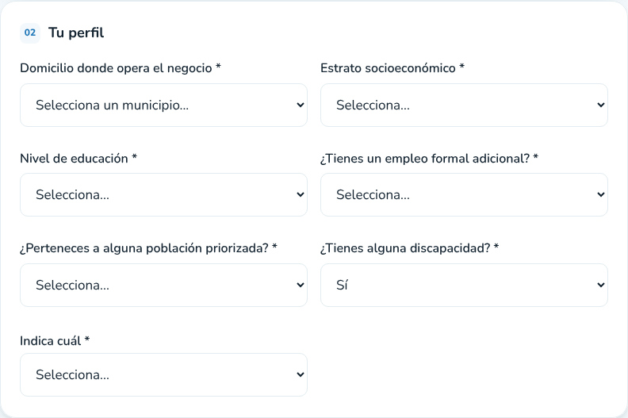
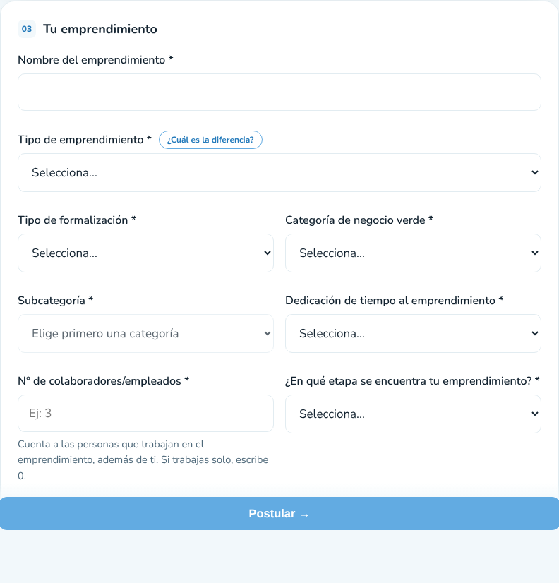
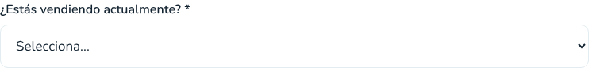
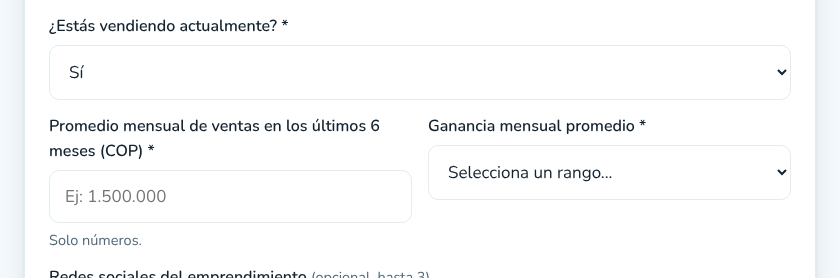
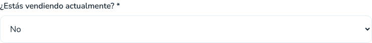
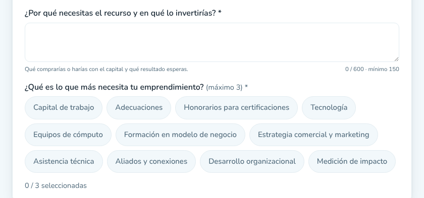
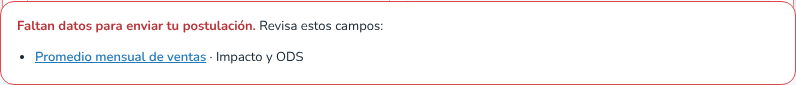
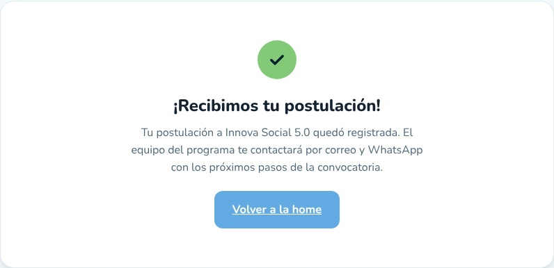
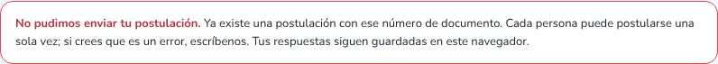
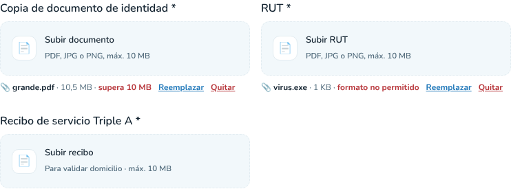
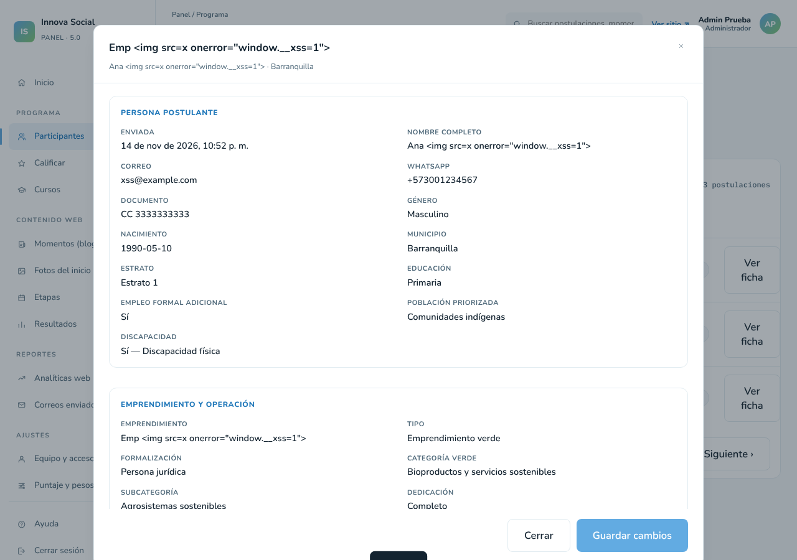
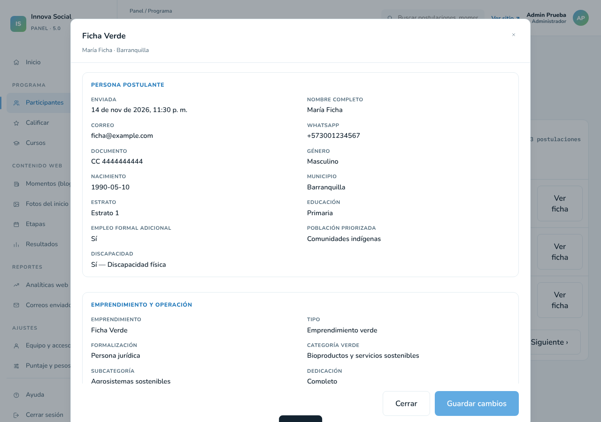
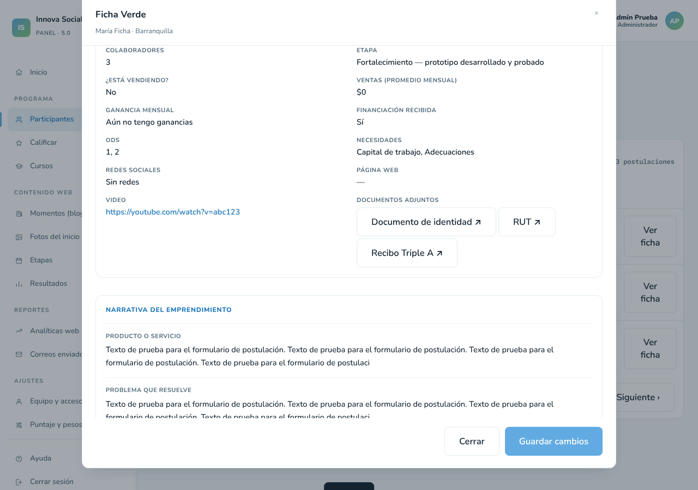
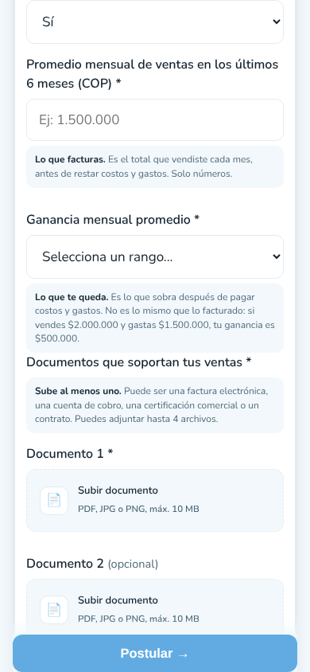
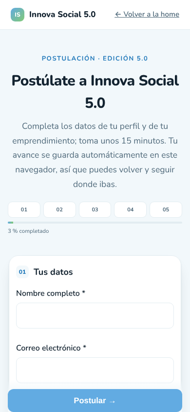
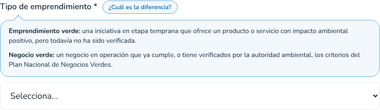
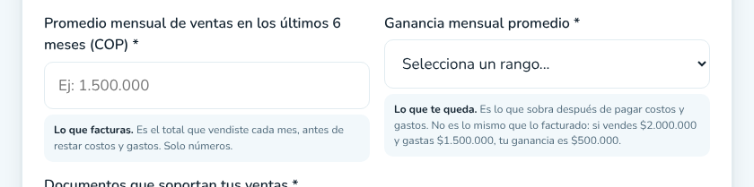
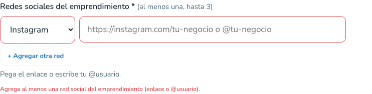
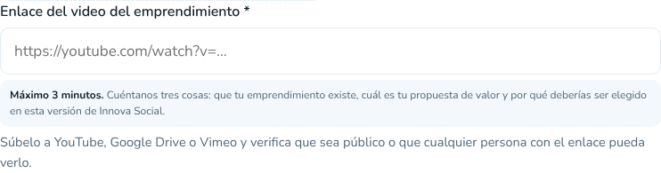
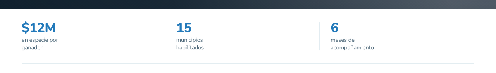
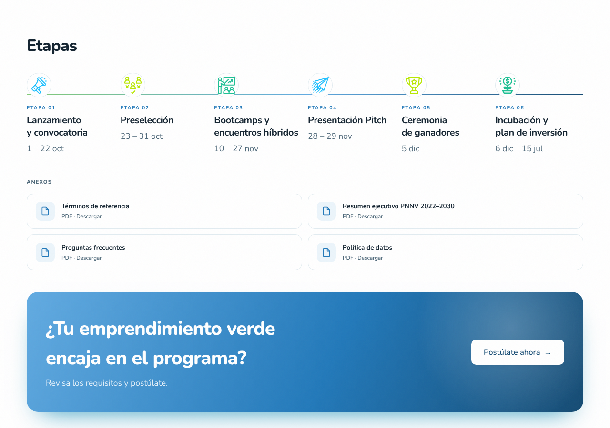
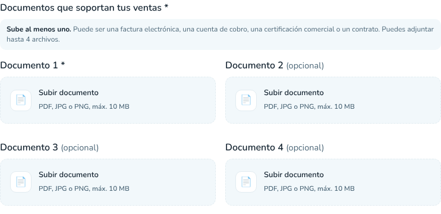
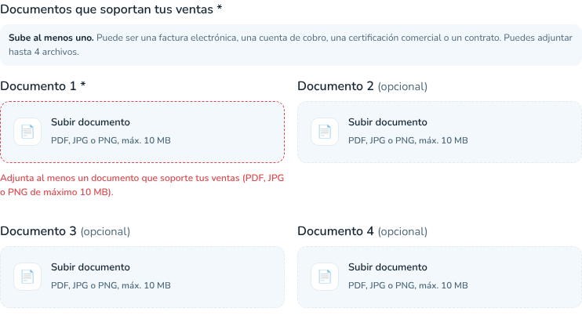
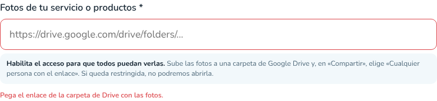
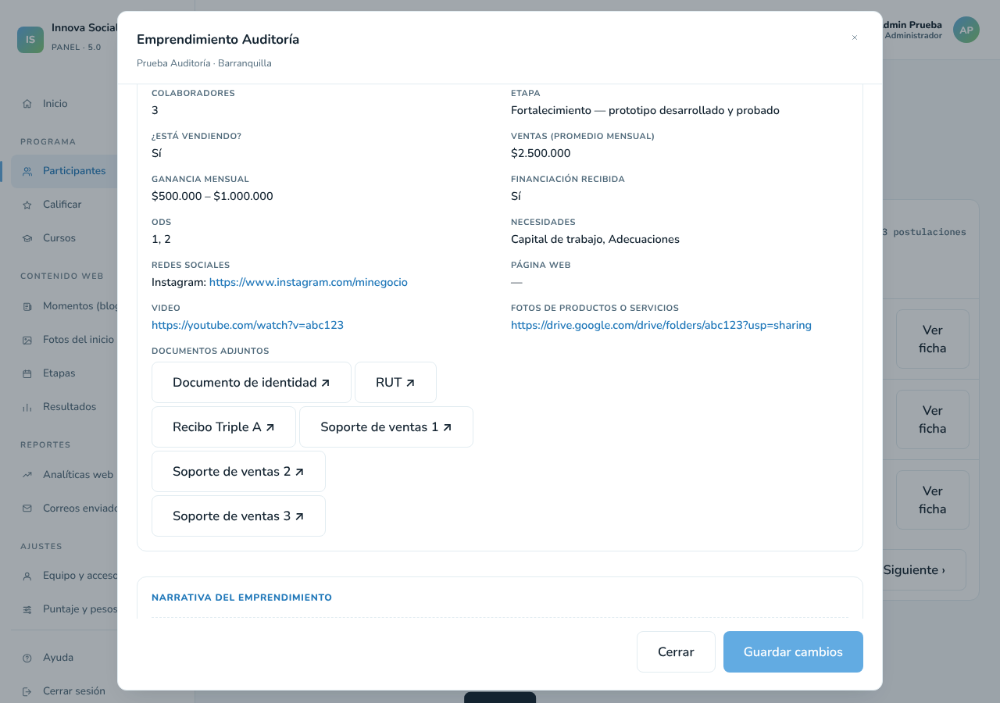
Resultado de pruebas/formulario.js, leído de capturas/resultados.json.
01 Tus datos · 02 Perfil · 03 Emprendimiento · 04 Impacto · 05 Documentos01,02,03,04,05Promedio mensual de ventas · Impacto y ODS2500000 · $500.000 – $1.000.0000 · Aún no tengo gananciasComunidades indígenas · Sí · Discapacidad física · Fortalecimiento — prototipo desarrollado y probadoNo pudimos enviar tu postulación. Ya existe una postulación con ese número de documento. Cada persona puede postularse uRedes sociales del emprendimiento * (al menos una, hasta 3)Agrega al menos una red social del emprendimiento (enlace o @usuario).[{"red":"Instagram","url":"https://www.instagram.com/minegocio"}]$12M en especie por ganador 15 municipios habilitados 6 meses de acompañamiento{"href":"convocatoria.html#etapas","txt":"Ruta del programa\n→"}{"arriba":70,"alto":900,"h2":"Etapas"}Documento soporte de ventas 1 · Impacto y ODSPega el enlace de la carpeta de Drive con las fotos.cedula,recibo_triple_a,rut,soporte_ventas_1,soporte_ventas_2,soporte_ventas_36https://drive.google.com/drive/folders/abc123?usp=sharing3ancho=390supabase/tests/permisos.sql (en una transacción que se deshace). Las 2 postulaciones reales siguen iguales.pruebas/flow.js.pruebas/migraciones.js: se ejecuta dos veces sin error, la cédula repetida se rechaza, el enlace de fotos solo admite http(s) y la subida admite soporte_ventas_1 a 4 y nada más. Con cédulas repetidas previas se detiene sin cambiar nada.documentos.npx serve -l 4180 # desde la raíz del repo cd pruebas && npm install node formulario.js # formulario y capturas node flow.js # permisos con las migraciones reales
El formulario debe tener POSTULACIONES_ABIERTAS = true. Las pruebas usan el backend simulado (sw-simulado.js) y no tocan producción.